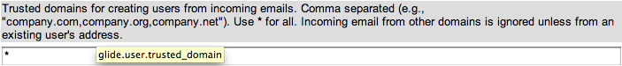

Inbound Email Actions
| |
Note: This article applies to Fuji and earlier releases. For more current information, see Inbound E-mail Actions at http://docs.servicenow.com
The ServiceNow Wiki is no longer being updated. Visit http://docs.servicenow.com for the latest product documentation. |
Contents
- 1 Overview
- 2 Creating an Inbound Email Action
- 3 Matching Incoming Email to an Inbound Action Type
- 4 Matching Email to Existing Users
- 5 Creating Users from Incoming Email
- 6 Accessing Email Objects with Variables
- 7 Setting Field Values from the Email Body
- 8 Assignment of Tasks via Email
- 9 Redirecting Emails to Different Assignment Groups
- 10 Attachments
- 11 Character Encoding
- 12 Setting Maximum Body Size
- 13 Preventing Untrusted Users from Triggering Inbound Actions
- 14 Allowing Locked Out Users to Trigger Inbound Email Actions
- 15 Using sys_email
- 16 Troubleshooting
1 Overview
Inbound email actions enable an administrator to define the actions ServiceNow takes when receiving email. Inbound email actions are similar to business rules, using both conditions and scripts. The inbound email action checks the email for a watermark that associates it with a task and checks for other conditions. If the conditions are met, the inbound email action runs the script.
By default, if an email has no identifiable watermark, an inbound email action attempts to create a new incident from the message. If the email has a watermark of an existing incident, an inbound email action updates the existing incident according to the action's script. For detailed examples of email actions that interact with incidents, problems, and change requests, see Examples of Inbound Email Actions.
The system ignores the domain that the inbound email action record is in when it creates a record based on the inbound email action. Keep inbound actions in the global domain. For example, if your inbound email action creates an incident, the system creates the incident in the same domain as the user in the Caller field. If that user is not in the User [sys_user] table, the incident is in the global domain.
2 Creating an Inbound Email Action
To add an inbound email action:
- Navigate to System Policy > Email > Inbound Actions.
- Click New.
- Complete the fields on the form (see table).
{kind=link}
| |
Note: You might need to personalize the form to see all the fields below. |
| Field | Description |
|---|---|
| Name | Enter a descriptive name for this email action. |
| Target table | Select the table where the action will add or update records. |
| Type | Select the message type required to run the action. The action runs only if the inbound email is of the selected type. Available types are:
|
| Condition | [Optional] Enter a statement that determines when the inbound email action runs. If a condition is entered, the action runs only when the condition statement evaluates to true. For example: email.subject.startsWith("chg:")
|
| Active | Select this check box to enable the action. Clear the check box to disable the action. |
| From | [Optional] Select the user required to run the action. If a user is selected, the action runs only when the email sender matches the user name. Leave this field blank to perform the action for all users. |
| Script | Enter the script the action runs. Typically, this script uses the validators script include and email variables. |
| Description | Enter a detailed explanation of what this inbound email action does. |
| Other fields | |
| Order | Enter a number to define the order in which this email action should be processed. Actions with lower numbers are processed first. For more information, see Ordered Email Processing. This field is not installed by the Ordered Email Processing plugin. |
| |
Note: For sample scripts, see the Useful Scripts portal. |
3 Matching Incoming Email to an Inbound Action Type
ServiceNow uses the following logic to match an email to a specific inbound action type.
{kind=link}
| Inbound Email Action Type | Required Matching Criteria | Name of Default Action (Incident table) | Result of Default Action |
|---|---|---|---|
| Forward | The email contains the following conditions:
|
Create Incident (Forwarded) | Create new record |
| Reply | The email contains one of the following conditions and the table specified in the email matches the table of the inbound action:
|
Update Incident (BP) | Update existing record |
| New | The email does not meet the conditions for either a reply or forward type inbound email action | Create Incident | Create new record |
If more than one inbound action is available for a particular type, ServiceNow uses the Table field to match the email to a particular table. If there is also more than one action for the inbound action's table, ServiceNow uses the Order field to determine the order in which the actions run.
3.1 Specifying Recognized Reply Prefixes
When no watermark or In-Reply-To email header is present, ServiceNow recognizes email containing a prefix from the glide.email.reply_subject_prefix property as reply email. Emails with these prefixes trigger inbound email actions of the type reply. Set this property if your email system uses non-standard reply prefixes.
| Property | Description | ||
|---|---|---|---|
| glide.email.reply_subject_prefix | Specifies the list of prefixes (comma-separated) in the subject line that identify an email reply.
|
3.2 Specifying Recognized Forward Prefixes
ServiceNow recognizes any email whose subject line contains a prefix from the glide.email.reply_subject_prefix property as forwarded email. Emails with these prefixes trigger inbound email actions of the type forward. Set this property if your email system uses non-standard forward prefixes or you want forwards to behave like replies.
| Property | Description | ||
|---|---|---|---|
| glide.email.forward_subject_prefix | Specifies the list of prefixes (comma-separated) in the subject line that identify a forwarded email.
|
3.3 Processing Forwards as Replies
You can force inbound actions to process forwarded mail as replied mail by modifying the subject prefix properties as follows.
| Property | Value Needed |
|---|---|
| glide.email.reply_subject_prefix | re:,aw:,r:,fw:,fwd: |
| glide.email.forward_subject_prefix | [any text that is not a forward prefix] |
This causes all forwarded and replied to mail to be processed by the Update Incident inbound action.
The glide.email.forward_subject_prefix property must contain some text in order for the forwarded email to be processed as a Reply. It can be any text except a forward prefix (that is, fw:,fwd:).
3.4 Matching Incoming Email to Existing Records
To understand how the instance matching incoming email to existing records, see this graphic.
The instance searches for watermarks in the email subject line first, then in the email body. If no watermark is present, the instances searches for an In-Reply-To email header that matches an existing record. If that is not found, the instances searches the subject line for a recognized reply prefix.
| |
Note: Some versions of Microsoft Exchange Server require a hotfix to support the "In-Reply-To" header when replying to email that originates from outside the organization. |
3.4.1 Examples of Matching Watermarks in the Subject Line or Body
The following examples illustrate how ServiceNow matches watermarks in an email's subject line or body.
| Subject Line or Body Contents | Matching results |
|---|---|
| Ref:MSG0000008 | ServiceNow recognizes this as a watermark and searches the Email Watermarks [sys_watermarks] table for a record with the number MSG0000008. If this watermark exists, ServiceNow matches the email to the associated record. If this watermark does not exist, ServiceNow uses the inbound action for new emails to create a new incident, and associates the new incident with the email. |
| Ref:MSGWTR0000008 | ServiceNow recognizes this as a watermark and searches the Email Watermarks [sys_watermarks] table for a record with the number MSGWTR0000008. If this watermark exists, ServiceNow matches the email to the associated record. If this watermark does not exist, ServiceNow uses the inbound action for new emails to create a new incident, and associates the new incident with the email. |
| Ref:WTR0000008 | ServiceNow recognizes this as a watermark and searches the Email Watermarks [sys_watermarks] table for a record with the number WTR0000008. If this watermark exists, ServiceNow matches the email to the associated record. If this watermark does not exist, ServiceNow uses the inbound action for new emails to create a new incident, and associates the new incident with the email. |
| MSG0000008 | ServiceNow does not recognize this as a watermark because it does not start with the Ref: prefix. It uses the inbound action for new emails to create a new incident, and associates the new incident with the email. |
3.4.2 Examples of Matching Record Numbers in the Subject Line
The following examples illustrate how ServiceNow matches record numbers in an email's subject line to an existing record when no watermark is present.
| Subject Line Contents | Matching Results |
|---|---|
| RE: Example INC0005574 | ServiceNow recognizes this subject line as a reply and recognizes the INC prefix as belonging to the incident table. ServiceNow searches the incident table for an existing record INC0005574. If this incident exists, the email is associated with this incident. If this incident record does not exist, ServiceNow uses the inbound action for new emails to create a new incident, and associates the new incident with the email. |
| RE: Example "INC0005574" RE: Example *INC0005574 |
The instance recognizes this subject line as a reply but does recognizes the "INC prefix as belonging to the Incident table because of the quotation mark. The same error occurs for any character other than a space before the record number. The instance instead uses the inbound action for new emails to create an incident, and associates the new incident with the email. |
| RE: "Example INC0005574" RE: Example INC0005574* |
The instance recognizes this subject line as a reply and recognizes the INC prefix as belonging to the Incident table. The instance searches the Incident table for an existing record INC0005574", which it will not find because of the quotation mark. The same error occurs for any character other than a space at the end of the record number. The instance instead uses the inbound action for new emails to create an incident, and associates the new incident with the email. |
| RE: CHG0008593 and INC000576 | ServiceNow recognizes this subject line as a reply and recognizes one, but not both, of the number prefixes. There is no way to predict which prefix ServiceNow will match first. Whichever prefix it matches, it searches the corresponding table for a matching record. If the record exists, the email is associated with the table. If the record does not exist, ServiceNow uses the inbound action for new emails to create a new incident and associates the new incident with the email.
Note: ServiceNow does not support processing email with multiple numbers in the subject line because there is no way to predict which record ServiceNow will match first. For this reason, ServiceNow does not recommend creating notifications that include more than one $number variable. |
| FW: Example INC0005574 | ServiceNow recognizes this subject line as a forward because of the FW: prefix and uses the inbound action for forwarded emails to create a new incident, and associates the new incident with the email. |
| Example INC0005574 | ServiceNow recognizes this subject as a new email because it does not contain a matching reply or forward prefix. It uses the inbound action for new emails to create a new incident, and associates the new incident with the email. |
4 Matching Email to Existing Users
When ServiceNow receives an email message, the system searches for an existing user record with the same email address as the sender. For example:
| Value of email.from variable | Matching User ID | Email address | Name |
|---|---|---|---|
| michael.tossi@company.com | michael.tossi@company.com | michael.tossi@company.com | Michael Tossi |
| "Michael Tossi" <michael.tossi@company.com> | michael.tossi@company.com | michael.tossi@company.com | Michael Tossi |
| "Tossi, Michael" <michael.tossi@company.com> | michael.tossi@company.com | michael.tossi@company.com | Michael Tossi |
| "Tossi" <mtossi@company.com> | mtossi@company.com | mtossi@company.com | Tossi |
| |
Note: This functionality requires that you activate the Email Automatic User Creation plugin. For more information on the plugin, see Upgrading the User Creation Method to Use the Full Email Address. |
Inbound Email Action scripts no longer support the gs.createUser() method. Use either the automatically-generated email variables or the gs.GetUserID() method instead.
4.1 Impersonating Users to Run Inbound Actions
If the sender of an incoming email matches an existing user, the instance impersonates the matching user to complete any inbound email actions. If the sender does not match an existing user, the instance impersonates the Guest user to complete any inbound email actions. If the impersonated user is locked out, the inbound email action fails.
| |
Note: If inbound email comes from an untrusted domain, the instance impersonates the Guest user unless you explicitly prevent users from untrusted domains from triggering inbound actions. |
5 Creating Users from Incoming Email
ServiceNow can automatically create users from incoming email. If the search does not find a user with a matching email address, ServiceNow can create a new user with the User ID [sys_user.user_name] set to the sender's full email address.
| Value of email.from variable | User ID created | Email address | Name |
|---|---|---|---|
| new.user@company.com | new.user@company.com | new.user@company.com | New User |
| "New User" <new.user@company.com> | new.user@company.com | new.user@company.com | New User |
| "User, New" <new.user@company.com> | new.user@company.com | new.user@company.com | New User |
| "User" <nuser@company.com> | nuser@company.com | nuser@company.com | User |
5.1 Enabling Automatic User Creation
To enable the automatic creation of user records from email, you must set two email properties.
- Navigate to System Properties > Email.
- Select the check box for Automatically create users for incoming email from trusted domains (glide.pop3readerjob.create_caller).
-
- Enter the list of trusted domains in Trusted domains for creating users from incoming emails (glide.user.trusted_domain).
- List of trusted domains
- Click Save.
{kind=link}
{kind=link}
| |
Note: When the property glide.pop3readerjob.create_caller is set to false, ServiceNow runs inbound actions from users who do not match an existing user by impersonating the Guest user. You may want to prevent untrusted users from triggering inbound actions by locking out the Guest user. |
5.2 Upgrading the User Creation Method to Use the Full Email Address
You can upgrade the method ServiceNow uses to create users by activating the Email Automatic User Creation plugin. The plugin makes the following changes:
- Sets the property glide.email.create_userid_from_email to true.
- Increases the width of the User ID [sys_user.user_name] column to accommodate email addresses.
After activating the plugin, enable automatic user creation from email.
| |
Warning: ServiceNow, Inc. strongly recommends reviewing your existing user records to reconcile any that contain identical email addresses. If you activate the plugin prior to reconciling email addresses, your instance cannot distinguish between users with identical email addresses and will randomly select one of the users with the matching email address. |
6 Accessing Email Objects with Variables
An inbound email action script has access to various pieces of an inbound email through script variables.
| Variable | Contents |
|---|---|
| email.to | Contains a comma-separated list of email addresses in the To: and Cc: boxes. |
| email.direct | Contains a comma-separated list of email addresses in the To: box. |
| email.copied | Contains a comma-separated list of email addresses in the Cc: box. |
| email.body_text | Contains the body of the email as a plain text string. |
| email.body_html | Contains the body of the email as an HTML string. |
| email.from | Contains an email address according to the following conditions. If the address listed in the email Headers field matches an existing user's Email address, this variable contains the user's Email address. If the address listed in the email Headers field does not match an existing user's Email address, this variable contains the address listed in the email Headers field (starting with Eureka Patch 5) or the Guest user's Email address (in versions prior to Eureka Patch 5). |
| email.from_sys_id | Contains the Sys ID of the user who sent the email to the instance. |
| email.origemail | Contains the email sender's address as listed in the email Headers. |
| email.subject | Contains the email's subject as a plain text string. |
| email.recipients | Contains a comma-separated list of recipient addresses. |
| email.recipients_array | Contains the recipient addresses as an array. |
| email.content_type | Contains the MIME content type of the email (for example, text/plain; charset="us-ascii" or text/html; charset="us-ascii"). |
| email.headers | Contains details about the sender, route, and receiver as a plain text string in the format of the sending email client. |
| |
Note: ServiceNow follows RFC 2822 (Internet Message Format), which requires multiple email addresses in a group to be separated by commas, not semicolons. ServiceNow can set the values of the email.to, email.direct, and email.copied variables only if email addressed to groups follow the expected RFC format. |
6.1 Processing Recipients in Inbound Email
The recipients variables allow processing of inbound email based on the email recipients:
- email.recipients: returns a comma-separated list of recipient addresses as a plain text string.
- email.recipients_array: returns the recipient addresses as an array.
For example, create a script to process email based on the array values:
var rarray = email.recipients_array;
for (var i = 0; i < rarray.length; i++) {
var recipient = rarray[i];
// do something with it
}
7 Setting Field Values from the Email Body
Values in an inbound email can set field values in a task record. Any name:value pair in an inbound email body gets parsed into a variable/value pair in the inbound email script. The name:value pair must be on its own line. Note that most email clients limit the number of characters allowed per line and may truncate excessively long name:value pairs. To populate a reference field use setDisplayValue() instead. See Redirecting Emails for an example of using setDisplayValue() in an inbound email action.
| |
Note: The action always generates a lowercase variable name. Note also that this functionality does not work on reference fields. |
For example, if an email body contains this line:
Foo:bar
The inbound email script creates the variable email.body.foo with the value of bar. You can use these variables to create conditions such as:
if(email.body.foo != undefined) {
current.[field] = email.body.foo;
}
In this example, the script sets the value of [field] to the value bar.
7.1 Matching the Sender's Email Address to a User
When processing an email, ServiceNow sets the current user to the user whose email address matches email.from. Inbound actions can then reference that current user. For example, the base system inbound action Create Incident sets the incident's caller_id to the value returned by gs.getUserID().
If multiple users have the same email address, the instance first searches for an active user with the email address. The instance does not match inactive users.
| |
Warning: You should have a unique email addresses for each user record. Otherwise, the instance can not reliably match the email to the correct user and unpredictable matches may occur. |
If providing a unique email address to each user is not possible, ServiceNow recommends only having one active user with the shared email address. This configuration guarantees that ServiceNow always matches incoming email from this address to the active user.
| |
Note: The Email Automatic User Creation plugin must be active. |
8 Assignment of Tasks via Email
The name:value example shows a useful email capability; that is, the ability to set a field in a record. For example, the change.itil.approve.role email template lists several fields in the outbound notification.

Notice the line in the template that shows Priority:${sysapproval.priority}. When replying to this email, the approver can change the value of the Priority field directly from the email. For example, the approver could set the priority to 4 – Low:
Priority:4
9 Redirecting Emails to Different Assignment Groups
By default, the POP Reader scheduled job checks for new email every 2 minutes. It connects to the mail server and account specified in email properties. The POP Reader downloads any email waiting on the mail server and creates email.read events. After the instance processes the events, the inbound email actions run.
The POP Reader shows the number of emails processed during the reader's last run. The message shows the number of emails the reader processed or 0 processed if no emails were available. The reader resets the status each time it runs.
While it is not possible to specify more than one POP3 account for the instance, you can have other mailboxes forward to the designated POP3 account. Add this script to the Create Incident inbound email action to differentiate the content based on the original recipient and then set an assignment_group value.
if (email.direct.indexOf('facilities@anycorp.com') > -1)
current.assignment_group.setDisplayValue('Facilities Management');
Update the email address, original recipient, and assignment group name accordingly.
10 Attachments
If an inbound email contains one or more email attachments, the inbound email action adds the attachments to the first record the action produces.
11 Character Encoding
ServiceNow checks the MIME type of incoming email to verify the character encoding. If the email encoding is ASCII-7 or UTF-8, inbound email actions preserve the character encoding in any associated task records they produce. If the email encoding is ISO-8859-1, the inbound email action attempts to convert the email to Windows 1252. Inbound email actions convert any other encodings (for example, Mac OS Roman) to plain text, which may or may not be readable.
12 Setting Maximum Body Size
In some situations, an email message may contain more information in the body than the instance's data policy permits a field to write to the database. By default, an inbound email action can process only up to 16MB worth of information in the message body. If the email body exceeds this limit, the instance truncates the message body.
A system property controls the maximum size of a message body before the instance stops processing inbound email actions. The default value is set to match the data policy write limit of 16MB. You cannot set a higher value without conflicting with the write data policy limit. If you want to set a lower limit, you can add this system property. Ensure the limit is well below the maximum total email size.
| Property | Value |
|---|---|
| Name | com.glide.email.max_body_bytes |
| Description | Specify the maximum size of an email message body in bytes. The size cannot exceed the default value of 16MB. |
| Type | Integer |
| Value | 16777216 |
| |
Note: Email attachments have separate size limits. For more information, see Email Attachment Limits. |
13 Preventing Untrusted Users from Triggering Inbound Actions
Administrators can prevent users from untrusted domains from triggering inbound actions. For example, you can prevent email from users outside your company domain from creating incidents.
- Enable automatic user creation and add a list of trusted domains. For example, add your company domain example.com.
- Navigate to User Administration > Users.
- Select the user guest.
- Select the Locked out field to disable the guest account. Locking out a user record prevents ServiceNow from processing inbound actions.
When a user from a trusted domain sends an email to the instance, ServiceNow either matches the email to an existing user or creates a new user. Since the incoming email matches a user record (either an existing or new one), the email can trigger an inbound action.
When a user from an untrusted domain sends an email to the instance, ServiceNow attempts to impersonate the guest user. Since the guest user is locked out, the impersonation fails and the incoming email cannot trigger an inbound action.
| |
Warning: Allowing locked out users to trigger inbound actions also allows untrusted users to trigger inbound actions. |
14 Allowing Locked Out Users to Trigger Inbound Email Actions
Administrators can allow locked out users to trigger inbound actions by setting the system property glide.pop3.process_locked_out. This allows users who need to reset their password to send an email message to an instance asking for assistance.
| |
Warning: Enabling this feature also enables users from untrusted domains to trigger inbound actions. |
| Property | Description |
|---|---|
| glide.pop3.process_locked_out | Enables (true) or disables (false) the ability for locked out users to trigger inbound actions.
|
15 Using sys_email
You can use the global variable sys_email with inbound email actions. This lets you access the received sys_email record that triggered the inbound email action. It can be used to reference fields on the email record, such as uid, sys_id, content_type, and so on.
16 Troubleshooting
The following solution to this common inbound email error is useful for troubleshooting email actions. For more information, open the ServiceNow Knowledge Base and access the following two articles:
- For troubleshooting inbound email, see KB0524472.
- For troubleshooting outbound email, see KB0521382.
| Error or Symptom | Solution |
|---|---|
| Email from Outlook produces an empty Incident record containing an attachment named winmail.dat. | Configure the local Outlook client or Exchange server to not send Rich Text formatted (RTF) data to ServiceNow instances. To prevent Windows email from containing a winmail.dat file, see Microsoft KB 278061 for information on configuring Outlook or Microsoft KB 138053 for information on configuring Exchange. |
16.1 Logging
See the email logs for a description of what you can see in the system log.
Starting with the Dublin release, you can use these GlideSystem error messages to display messages:
- For an information message:
- gs.log("<INSERT LOG MESSAGE HERE>", "EMAIL." + sys_email.sys_id);
- For a warning message:
- gs.logWarning("<INSERT LOG MESSAGE HERE>", "EMAIL." + sys_email.sys_id);
- For an error message:
- gs.logError("<INSERT LOG MESSAGE HERE>", "EMAIL." + sys_email.sys_id);